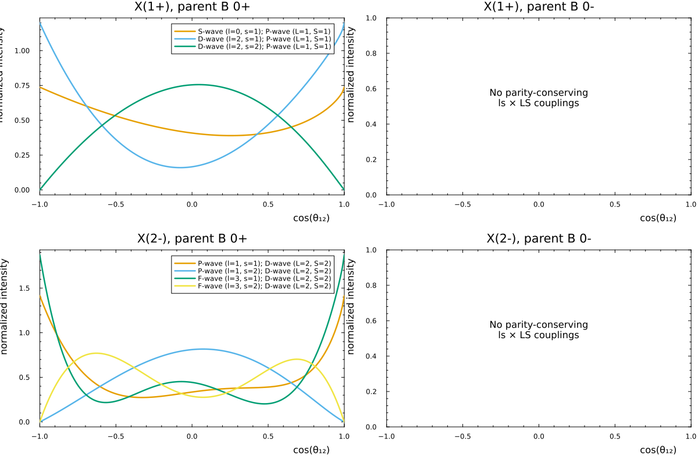

Angular distributions for B^0 \to X K with X \to J/\psi + \gamma ($X=1^+$ and $2^-$)
Reference
Helicity-angle distributions for $B \to K\,(J/\psi\,\gamma)$ in the X(3872) / $\eta_{c2}$ context are discussed in S.~X. Nakamura, Two nearby states in the X(3872) region: Resolving the radiative-decay ratio tension with $\eta_{c2}$ (INSPIRE 3122836), including a two-state scenario with $1^{++}$ and $2^{-+}$ components.
The effective Lagrangian in that paper fixes the $LS$ (and subchannel $ls$) content: the couplings are those written in the ansatz, not a scan over independent $LS$ amplitudes. This script, by contrast, lists all parity-conserving ls \times LS assignments that possible_lsLS allows for each $X$ spin–parity (one curve per term). The angular shapes can therefore differ from that paper even for the same $J^P$.
This example sets up B(0^±) -> X K(0^-), X -> J/psi(1^-) + gamma(1^-), for two choices X=1+ and X=2- (the only structural difference in the code). The X decay is in the (1,2) pair (k = 3, spectator kaon: 1=J/psi, 2=gamma, 3=K).
We scan parity-conserving ls × LS couplings and project the intensity onto cos(theta_12). The photon sum is transverse only (unpolarized_intensity_excluding_photon_longitudinal below). Masses are arbitrary; we use a light spectator and a heavy parent.
using ThreeBodyDecays
using Plots
using QuadGKTransverse photon: sum |A|² over helicities, excluding photon two_λ=0 (index photon in tbs).
function unpolarized_intensity_excluding_photon_longitudinal(
dc::AbstractDecayChain,
σs;
photon::Int = 2,
kw...,
)
F = amplitude(dc, σs; kw...)
@assert 1 <= photon <= 3
two_jγ = dc.tbs.two_js[photon]
s = zero(eltype(F))
for I in CartesianIndices(F)
iγ = Tuple(I)[photon]
two_λγ = 2 * (iγ - 1) - two_jγ
iszero(two_λγ) && continue
s += abs2(F[I])
end
return s
end
theme(
:wong,
frame = :box,
grid = false,
lab = "",
legendtitlefontsize = 9,
guidefontvalign = :top,
guidefonthalign = :right,
minorticks = true,
)
const ms = ThreeBodyMasses(1.0, 1.0, 0.5; m0 = 4.0)
const tbs = ThreeBodySystem(ms, ThreeBodySpins(2, 2, 0; two_h0 = 0)) # J/psi, photon, K
const k_resonance = 3
const z_grid = collect(range(-1.0, 1.0; length = 160))160-element Vector{Float64}:
-1.0
-0.9874213836477987
-0.9748427672955975
-0.9622641509433962
-0.949685534591195
-0.9371069182389937
-0.9245283018867925
-0.9119496855345912
-0.89937106918239
-0.8867924528301887
⋮
0.89937106918239
0.9119496855345912
0.9245283018867925
0.9371069182389937
0.949685534591195
0.9622641509433962
0.9748427672955975
0.9874213836477987
1.0Tuple of SpinParity => title string (only place that differs between the two 2×2 rows).
const RESONANCE_JPS = (jp"1+" => "1+", jp"2-" => "2-")
wave_name(two_l::Int) = string(letterL(div(two_l, 2)))
function coupling_label(two_ls, two_LS)
l, s = d2(two_ls)
L, S = d2(two_LS)
return "$(wave_name(two_ls[1]))-wave (l=$(l), s=$(s)); $(wave_name(two_LS[1]))-wave (L=$(L), S=$(S))"
end
function trapz(xs, ys)
return sum((ys[1:(end-1)] .+ ys[2:end]) .* diff(xs)) / 2
end
function cosθ_projection(chain; z_values = z_grid)
intensity = Base.Fix1(unpolarized_intensity_excluding_photon_longitudinal, chain)
values = map(z_values) do z
quadgk(project_cosθij_intergand(intensity, masses(chain), z; k = chain.k), 0, 1)[1]
end
values = max.(values, 0.0)
return values / trapz(z_values, values)
end
function all_chains_for_parent(parent_jp::AbstractString, resonance_jp)
_, Ps = ThreeBodySpinParities("1-", "1-", "0-"; jp0 = parent_jp)
confs = possible_lsLS(resonance_jp, tbs.two_js, Ps; k = k_resonance)
chains = map(confs) do (; two_ls, two_LS)
DecayChain(;
k = k_resonance,
two_j = resonance_jp.two_j,
Xlineshape = identity,
tbs,
Hij = VertexFunction(RecouplingLS(two_ls)),
HRk = VertexFunction(RecouplingLS(two_LS)),
)
end
labels = [coupling_label(conf.two_ls, conf.two_LS) for conf in confs]
return (; chains, labels)
end
function panel_for_parent(parent_jp::AbstractString, resonance_jp, x_title::AbstractString)
data = all_chains_for_parent(parent_jp, resonance_jp)
if isempty(data.chains)
p = plot(
xlim = (-1, 1),
ylim = (0, 1),
xlabel = "cos(θ₁₂)",
ylabel = "normalized intensity",
title = "X($x_title), parent B $parent_jp",
legend = false,
)
annotate!(0.0, 0.55, text("No parity-conserving\nls × LS couplings", 11, :center))
return p
end
p = plot(
xlabel = "cos(θ₁₂)",
ylabel = "normalized intensity",
title = "X($x_title), parent B $parent_jp",
legend = :topright,
xlim = (-1, 1),
)
for (chain, label) in zip(data.chains, data.labels)
plot!(p, z_grid, cosθ_projection(chain); lw = 2.5, label)
end
return p
endpanel_for_parent (generic function with 1 method)Two rows: X = 1+ (top) and 2- (bottom); two columns: B = 0+ and 0-.
const angular_distribution_plot = let
pss = map(Iterators.product(values(RESONANCE_JPS), ("0+", "0-"))) do (r_pair, pB)
r_jp, x_lab = r_pair
panel_for_parent(pB, r_jp, x_lab)
end
plot(
pss[1, 1],
pss[1, 2],
pss[2, 1],
pss[2, 2];
layout = (2, 2),
size = (1200, 800),
bottom_margin = 5Plots.PlotMeasures.mm,
)
end
output_path = get(ENV, "TBD_ANGULAR_DISTRIBUTION_PLOT", "")
if !isempty(output_path)
mkpath(dirname(output_path))
savefig(angular_distribution_plot, output_path)
@info "Saved angular-distribution plot" output_path
end
angular_distribution_plot
This page was generated using Literate.jl.